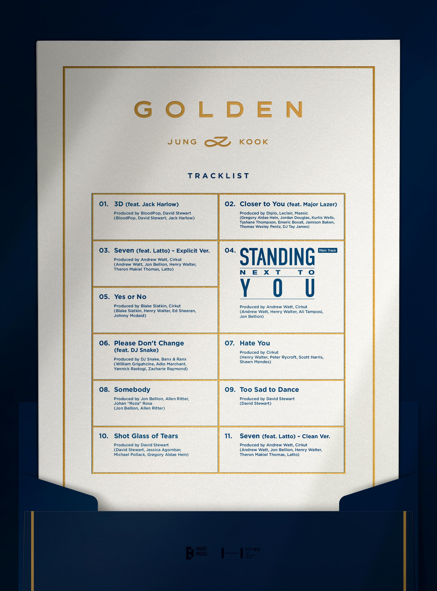

Jung Kook grew up in Busan with his parents and older brother. He attended Baekyang Elementary and Middle School before moving to Seoul when he became a trainee. He later attended Seoul School of Performing Arts, graduating in 2017. He also studied Broadcasting and Entertainment at Global Cyber University, where he received his degree in 2022. As a teenager, Jung Kook auditioned for the Korean talent show Superstar K. Although he was not selected, several entertainment companies showed interest in him. He eventually chose Big Hit Entertainment, partly after being impressed by RM. Before BTS debuted, he also trained in dance in Los Angeles.
Jung Kook made his official debut with BTS on June 13, 2013. BTS became one of the most internationally recognized K-pop groups, with Jung Kook serving as one of the group’s main vocalists and performers. He also developed a successful solo career. His solo songs include “Euphoria,” “My Time,” and “Still With You.” In 2023, he released his solo single “Seven” featuring Latto and later released his first solo album, Golden.
| Born | September 1, 1997 |
|---|---|
| Group | BTS |
| Debut | 2013 |
| Solo Album | GOLDEN |